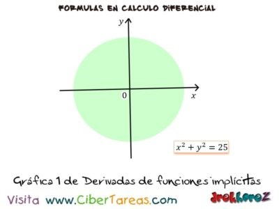
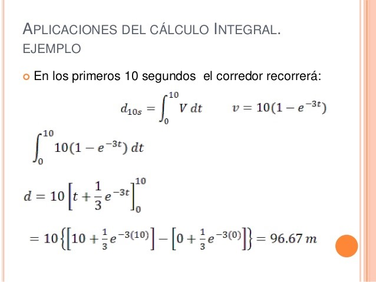
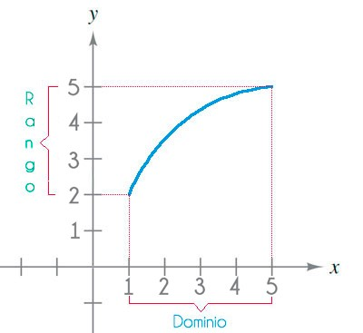
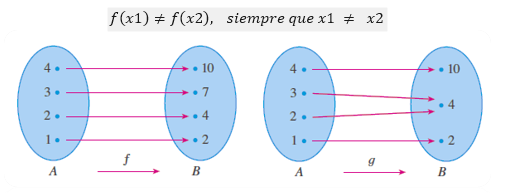
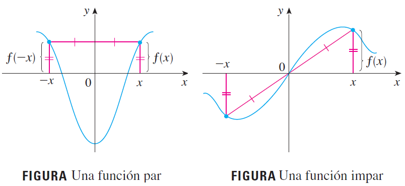
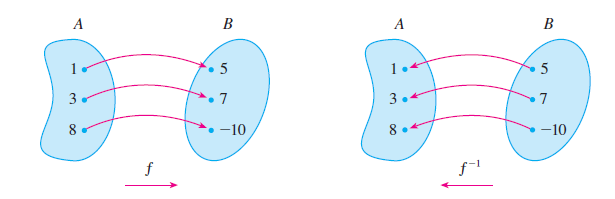

CALCULO
DEFINICION
El término cálculo (del latín calculus = piedra) hace referencia al resultado correspondiente a la acción de calcular. Calcular, por su parte, consiste en realizar las operaciones necesarias para proveer el resultado de una acción previamente concebida, o conocer las consecuencias que se pueden derivar de unos datos previamente conocidos.
HISTORIA
Los orígenes del cálculo se remonta a unos 2,500 años por lo menos, hasta los antiguos griegos, quienes hallaron áreas aplicando el método del agotamiento. Sabían cómo hallar el área de cualquier polígono al dividirlo en triángulos y sumar las áreas de estos triángulos.
EL CALCULO INFINITESIMAL
El cálculo infinitesimal o simplemente cálculo constituye una parte importante de la matemática moderna. El cálculo infinitesimal se divide en dos áreas:
CALCULO DIFERENCIAL:
Es la parte del análisis matemático que consiste en el estudio de cómo cambian las funciones cuando sus variables cambian.
EJEMPLO

CALCULO INTEGRAL:
Es muy común en la ingeniería y en la ciencias; se utiliza principalmente para el cálculo de áreas y volúmenes de regiones y sólidos de revolución.

FUNCION
Definición: f(x) es una relación entre un conjunto dado X (llamado dominio) y otro conjunto de elementos Y (llamado codominio) de forma que a cada elemento X del dominio le corresponde un único elemento f(x) del codominio.
El rango de f es el conjunto de todos los valores posibles de f(x). Un símbolo que represente un número arbitrario en el dominio de una función se llama variable independiente, un símbolo que represente un número en el rango de f se llama variable dependiente.
EJEMPLO

f(x) 3x-2
Video
FUNCIoN BIUNiVOCA
Definición: Una función f recibe el nombre de función biunívoca si nunca toma el mismo valor dos veces; esto es:

Prueba de la recta horizontal. Una función es biunicua si y solo si no hay una recta horizontal que cruce su grafica mas de una vez.
SIMETRIA
Si una función f satisface f(-x)=f(x), para todo número x en su dominio, entonces f se denomina función par. Además, si f satisface f(-x)=-f(x), para todo número x en su dominio, entonces f se denomina función impar
EJEMPLO

FUNCION INVERSA
Sea f una función biunívoca con dominio A y rango B. Entonces su función inversa f^(-1) tiene dominio B y rango A, y está definida por:
f^(-1) (y)=x ↔ f(x)=y
para cualquier y en B.

Ejemplo de cómo hallar una función inversa.
f(x)= x^3+2
y= x^3+2
y-2= x^3
x=∛(y-2)
y=∛(x-2)
f^(-1) (x)=∛(y-2)
Video